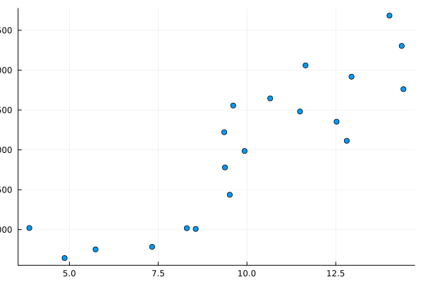
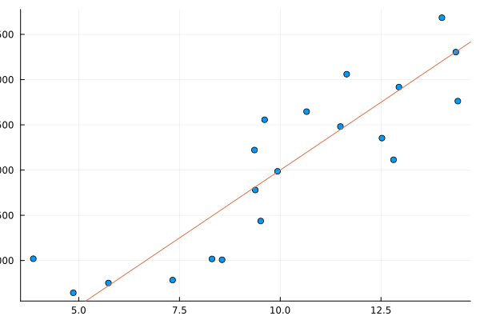

Exercise: Linear Regression
We will finish this chapter with an exercise that makes use of some of the basic syntax elements described before. Our goal is to implement linear regression. During the course of the workshop, we will come back to this example several times. Let's first have a look at what linear regression is: Suppose you observe the two variables education (in years) and income (per month in dollar), and you want to predict a persons income based on their education. One way to do this is linear regression. Suppose we conducted a study and observed the following data points:

On the x-axis, you see the years of education, and on the y-axis you see the monthly income. The task of linear regression is to find a straight line that best describes this relationship:

As you may recall from university, school, or learn just now, a straight line is mathematically described by $y = \alpha + \beta x$, where in our case, $y$ corresponds to income and $x$ to years of education.
Write a function predict that takes x, α and β as inputs and returns the predicted value for y.
show solution
function predict(x, α, β)
y = α .+ β*x
return y
endLet's simulate some data for the task at hand. First, we load the Random package (a julia package for random number generation) and set a seed (to make our experiments reproducible):
using Random
Random.seed!(1234)Random.TaskLocalRNG()Next, we generate some random values for years of education:
x = 10 .+ 3*randn(20)20-element Vector{Float64}:
12.911968986565643
7.062344765394401
12.705582650782281
9.901590612266082
8.197623329933316
5.664468654141301
18.12227182514734
14.573343590306788
12.279412060022398
7.355689281410555
12.117979401347831
13.274665846160229
12.614493558642724
10.257073327019132
12.880237454462616
12.723510996809502
9.383108871915919
12.312109525273629
6.358179486488937
13.274495746205444This produces a vector of 20 values with 10 years of education as the average, and some normally distributed random variation.
Use your previously defined function predict to generate some values for income (y) with α = 1000, β = 300
show solution
y = predict(x, 1000, 300)20-element Vector{Float64}:
4873.590695969693
3118.70342961832
4811.674795234685
3970.4771836798245
3459.2869989799947
2699.3405962423903
6436.681547544202
5372.003077092037
4683.82361800672
3206.7067844231665
4635.39382040435
4982.399753848069
4784.348067592817
4077.1219981057397
4864.071236338785
4817.053299042851
3814.932661574776
4693.632857582088
2907.453845946681
4982.348723861633
Since in reality, income does not perfectly depend on education, but there is some random variation, we add this random variation to y:
y += 500*randn(20)20-element Vector{Float64}:
4823.645221195984
2755.6322668011885
4870.718613298108
4441.843603957124
3454.3306407860846
2580.7422256856644
6319.658088985575
5976.1103158123615
5659.967831314555
3368.559310292467
4256.475254144916
5567.071070065267
5523.281634582452
4050.7583412019408
4981.319314300481
4810.9504254983985
3963.103061086381
5096.559166818264
2859.8794629077993
5348.951251046224And viola! We have some data to work with.
In reality of course, we don't know the values for $\alpha$ and $\beta$, but we have to estimate them from the data. To do so, we first need some indication of how good a certain combination of values works for our data. Usually, we use the sum of squared errors for this task:
\[\sum_{i=1}^n (\hat{y}_i - y_i)^2\]
So we go through all of our n data points (i = 1, ..., n) and for each of those data points we compute the squared distance between the prediction, $\hat{y}_i$, and the value we observed in reality, $y_i$.
Define a function squared_error that takes a vector of predicted values and a vector of observed values as input and computes the sum of squared errors between them.
show solution
function squared_error(y, ŷ)
return sum((y - ŷ).^2)
end(In case you are wondering, ŷ can by typed as y\hat<tab>)
Using your previously defined predict and squared_error functions to define a function squared_error_regression that takes as input values for α, β, x and y and returns as output the squared error between predictions and observed values. Then, use this function to compute the squared error for the parameter values 1. β = 100, α = 200 and 2. β = 300, α = 1000
show solution
function squared_error_regression(α, β, y, x)
return squared_error(y, predict(x, α, β))
end
squared_error_regression(200, 100, y, x)
squared_error_regression(1000, 300, y, x)2.1926837150818703e83.098658500723127e6
You should see that the error corresponding to the true parameters we used to simulate the data is much lower.